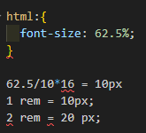
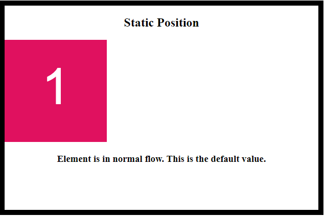
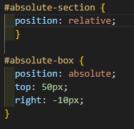
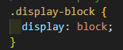
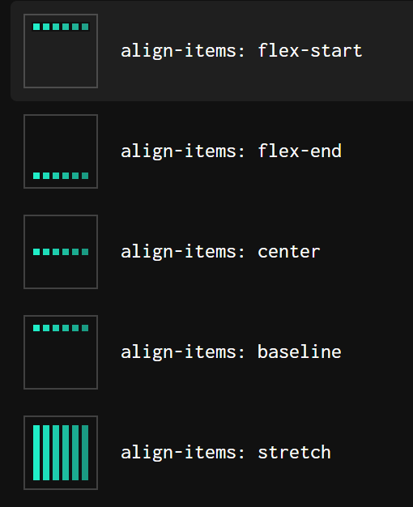
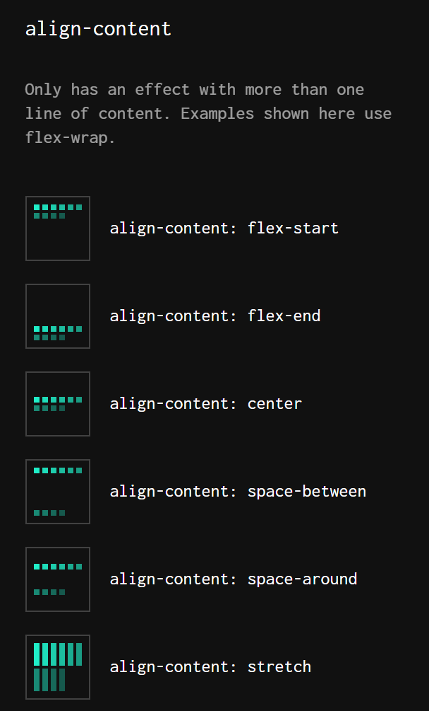
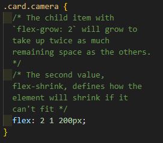
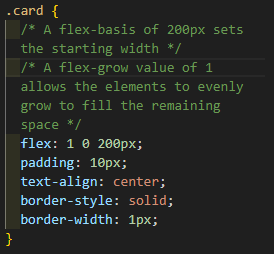

Fullstack Basics
CSS
Editing
Units of Measurement
- px - pixels
- %
- em - relative to its parent container
- rem - relative to html Selectors
- vh - viewport height
- vw - viewport width
-

Text Editing Examples
- font-family: "add name of font"
Can also go to google fonts and copy LINK to html and font-family for CSS.
- Line Height - changes the space above/below the font
- Font Weight: can bold
- Transform: can uppercase or lowercase stuff
- text-decoration: can underline, overline, strikethrough, etc
- font-style: can make italics
- text-align: moves text
Object Editing Exmaples
- changes the color of the text in this element
- [border: 2rem solid black;] changes the border of the element thickness and color.
- [visibility: hidden] -->causes the element to dissapear but doesn't take up space
- margins around the element.
margin: yaxis xaxis;
margin-top: 5px;
- [height: 5px] can change the sizing of the element
- [padding: 5px] changes the padding around teh element. Padding is inside the margin. Padding is inside the border.
- [box-sizing: border-box] This prevents padding and borders from adding to size of a picture if I want a set size on an element/pic
- [border: .25rem solid red] Creates a border around the element
- [box-shadow: 10px 10px 10px 10px gray] creates a shadow effect. xpx ypx dispersal spread color.
- This can make the borders more rounded rather than square.
- [transform:]
- [transform: skew(15deg)
- [transform: rotate(7deg)
- [transform: scale(1,2); scales x, y
Positioning
Basic Position: Fixed, Static, Relative, Abs
- BASIC POSITIONING (static, relative, fixed, flex)
- Static:
- nothing is called --> goes straight to left
- 
- Relative
- Fixed:
- element is removed from the normal doc flow and does not move
- top, left: 0; doesn't move from top of screen.
- Absolute:
- removed from normal flow. Final position is relative to the positioned parent or ancestor and is determined by the values of top, bottom, left, right
- Parent must be set to RELATIVE
-

- DISPLAYS
- 
- Block Level
- Ex.paragraph, unordered lists
- Inline
- None
- disappears but still takes space on page
- Inline-Flex
- Flex
- FLEXBOX
- Main Axis & Cross Axis (default main is x axis)
- Flex Container Properties
- Flex Direction
- Specifies direction of items in container
- row, column, row-reverse, columnn-reverse
- Flex Wrap
- Specifies whether the flex items should wrap or not
- [flex-wrap: wrap, nowrap, wrap-reverse]
- Flex-Flow
- shorthand for direction and wrap in One
- [flex-flow: column wrap;]
- Justify-Content
- Defines alignment along MAIN axis
- center, flex-end, flex-start, space-around, space-evenly, space-between
- Align-Items
- Defines alignment along CROSS axis
-

- Align-Content
- Modifies the behavior of the flex-wrap property. It is similar to align-items, but instead of aligning flex items, it aligns flex lines
-

- Flex Item Properties
- order
- THe order property can change teh order of the flex items
- flex-grow
- THe flex-grow property specifies how much a flex item will grow relative to teh rest of the flex items
- flex-shrink
- The flex shrink will specify how much item will shrink in relation
- flex-basis
- flex-basis specifies the initial length of a flex item
- flex
- Flex property is short hand for flex-grow, flex-shrink, flex-basis all in one
- [flex:2 1 200px;]
-


- align-self
- Specifies teh alignment for selected item inside the flex container